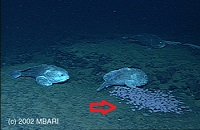

Even though blobfish is endangered, we know every little about this species. You will find all kinds of different data about blobfish through the internet while some of the data are conflicting. Blobfish usually shows in pink or gray color with a body length of 12 inches and body weight of 5.5 pound. This page will introduce blobfish from 3 aspects:
Studies have shown that blobfish are feeding on crabs, sea pens, urchins, mollusks, lobsters, and shellfish. They rarely move around unless the food is nearby. Since blobfish don't have musculoskeletal system and swim bladder, they cannot hunt everywhere. The hypothesis is that blobfish just open mouth and sit there, waiting for whatever pass by and then suck it in if it is eatable. Unfortunately, we still don't how much food and how often do they eat in a certain amount of time.
Blobfish have been found in the deep sea off the coasts of mainland Australia (from southern Queensland to southern Australia), Tasmania island and New Zealand. They live and hover on the sea floor where they fight for the unusual high pressure and managed to live. There might be other habitat for blobfish but by now, these three areas are the only locations have been reported as habitats for blobfish. Please refer to the map above for better presentation. (Red line draws on the map indicates the main habitats discovered so far for blobfish).

It is still a mystery how blobfish reproduces new generation. With all the information we already know is the female blobfish lays about thousands of pink eggs on its nest on the sea floor. Several females often nesting next to each other, and they hover over their eggs until they hatch. As to how male blobfish fertilizes these eggs, it is still unknown. Besides, people still don't know much about the egg hatching process and early lives of blobfish. The longevity of the blobfish is also unknown. Since most deep sea creatures have a very long life and slow rate of growing and aging, people assume that blobfish also has a long lifespan.
There are some organizations dedicated on educating people and preserving this special species:
| Organization | Description of Services Provided |
|---|---|
| Australian Museum | The Museum keeps the famous specimen (Mr. Blobby) in Ichthyology Collection (AMS I.42771-001). |
| Ugly Animal Preservation Society | It successfully draws peoples’ attention on blobfish and tris to preserve blobfish. |
| National Oceanic and Atmospheric Administration (NOAA) | Educating people about blobfish. |
Return to the Homepage.